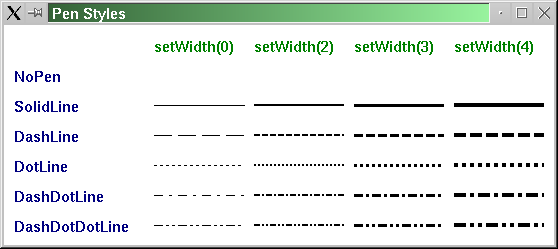
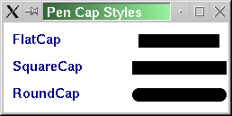

| Home · All Classes · Main Classes · Grouped Classes · Modules · Functions |
The QPen class defines how a QPainter should draw lines and outlines of shapes. More...
#include <QPen>
The QPen class defines how a QPainter should draw lines and outlines of shapes.
A pen has a style, width, brush, cap style and join style.
The pen style defines the line type. The default pen style is Qt::SolidLine. Setting the style to Qt::NoPen tells the painter to not draw lines or outlines.
The pen brush defines the fill of lines and text. The default pen is a solid black brush. The QColor documentation lists predefined colors.
The cap style defines how the end points of lines are drawn. The join style defines how the joins between two lines are drawn when multiple connected lines are drawn (QPainter::drawPolyline() etc.). The cap and join styles only apply to wide lines, i.e. when the width is 1 or greater.
Use the QBrush class to specify fill styles.
Since Qt 4.1 it is possible to specify a custom dash pattern in QPen using setDashPattern().
Example:
QPainter painter;
QPen pen(Qt::red, 2); // red solid line, 2 pixels wide
painter.begin(&anyPaintDevice); // paint something
painter.setPen(pen); // set the red, wide pen
painter.drawRect(40,30, 200,100); // draw a rectangle
painter.setPen(Qt::blue); // set blue pen, 0 pixel width
painter.drawLine(40,30, 240,130); // draw a diagonal in rectangle
painter.end(); // painting done
See the Qt::PenStyle enum type for a complete list of pen styles.
Whether or not end points are drawn when the pen width is zero or one depends on the cap style. Using SquareCap (the default) or RoundCap they are drawn, using FlatCap they are not drawn.
A pen's color(), brush(), width(), style(), capStyle() and joinStyle() can be set in the constructor or later with setColor(), setWidth(), setStyle(), setCapStyle() and setJoinStyle(). Pens may also be compared and streamed.

See also QPainter and QPainter::setPen().
Constructs a default black solid line pen with 0 width.
Constructs a black pen with 0 width and style style.
See also setStyle().
Constructs a pen of color color with 0 width.
See also setBrush() and setColor().
Constructs a pen with the specified brush brush and width width. The pen style is set to s, the pen cap style to c and the pen join style to j.
See also setWidth(), setStyle(), and setBrush().
Constructs a pen that is a copy of p.
Destroys the pen.
Returns the brush used to fill strokes generated with this pen.
See also setBrush().
Returns the pen's cap style.
See also setCapStyle().
Returns the pen color.
See also setColor().
Returns the dash pattern of this pen.
See also setDashPattern().
Returns true if the pen has a solid fill
Returns the pen's join style.
See also setJoinStyle().
Returns the miter limit of the pen. The miter limt is only relevant when the join style is set to Qt::MiterJoin.
See also setMiterLimit().
Sets the brush used to fill strokes generated with this pen to the given brush.
See also brush().
Sets the pen's cap style to c.
The default value is Qt::SquareCap.

See also capStyle().
Sets the pen color to c.
See also color().
Sets the dash pattern for this pen to pattern. This implicitly converts the style of the pen to Qt::CustomDashLine.
The pattern must be specified as an even number of entries where the entries 1, 3, 5... are the dashes and 2, 4, 6... are the spaces.
The dash pattern is specified in units of the pens width, e.g. a dash of length 5 in width 10 is 50 pixels long. Each dash is also subject to cap styles so a dash of 1 with square cap set will extend 0.5 pixels out in each direction resulting in a total width of 2.
See also dashPattern().
Sets the pen's join style to j.
The default value is Qt::BevelJoin.
See also joinStyle().
Sets the miter limit of this pen to limit.
The miter limit describes how far a miter join can extend from the join point. This is used to reduce artifacts between line joins where the lines are close to parallel.
This value does only have effect when the pen style is set to Qt::MiterJoin. The value is specified in units of the pens width.
See also miterLimit().
Sets the pen style to s.
See the Qt::PenStyle documentation for a list of all the styles.
See also style().
Sets the pen width to width
A line width of zero indicates cosmetic pen. This means that the pen width is always drawn one pixel wide, independent of the transformation set on the painter.
Setting a pen width with a negative value is not supported.
See also setWidthF() and width().
Sets the pen width to width.
See also setWidth() and widthF().
Returns the pen style.
See also setStyle().
Returns the pen width with integer preceision.
See also setWidth().
Returns the pen width with floating point precision.
See also setWidthF() and width().
Returns the pen as a QVariant
Returns true if the pen is different from p; otherwise returns false.
Two pens are different if they have different styles, widths or colors.
See also operator==().
Assigns p to this pen and returns a reference to this pen.
Returns true if the pen is equal to p; otherwise returns false.
Two pens are equal if they have equal styles, widths and colors.
See also operator!=().
This is an overloaded member function, provided for convenience. It behaves essentially like the above function.
Writes the pen p to the stream s and returns a reference to the stream.
See also Format of the QDataStream operators.
This is an overloaded member function, provided for convenience. It behaves essentially like the above function.
Reads a pen from the stream s into p and returns a reference to the stream.
See also Format of the QDataStream operators.
| Copyright © 2005 Trolltech | Trademarks | Qt 4.1.0 |